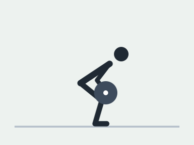

Тяга штанги в наклоне

Тяга штанги к поясу в наклоне. Хорошо прорабатывает середину спины.
Характеристики
- Основные мышцы: широчайшие, середина спины
- Дополнительно работают: бицепс, задняя часть плеч
- Снаряжение: штанга
- Уровень: средний
- Рекомендация: 3–4 подхода по 8–12 повторений
Техника выполнения
- Возьми штангу хватом на ширине плеч.
- Наклонись вперёд примерно на 45 градусов, колени чуть согнуты.
- Тяни штангу к низу живота, сводя лопатки.
- Медленно опусти штангу.
Частые ошибки
- Круглая спина.
- Рывки корпусом.
- Слишком большой вес.